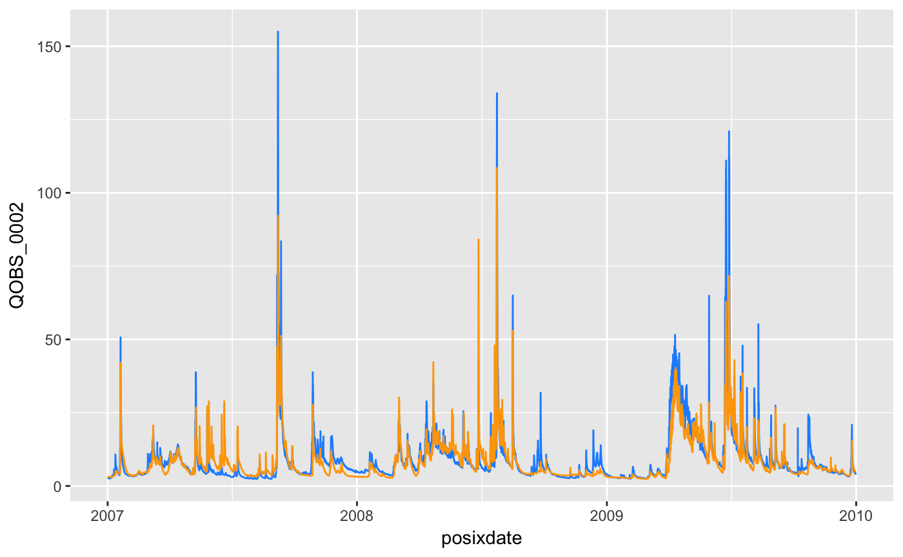

cosdata
Daniel Klotz
LP-cook_data.RmdFor visCOS raw-data is data directly taken from COSERO. In general, raw-data can have many forms. The focus of visCOS are time series of observations, \(o\), and model simulations, \(s\). It assumes that the data is already loaded in to R.
R has many options to read data. Most file-formats can be accessed with the native read. functions (for an example enter ?read.table in your R-terminal). However, for larger files we recommend the read functionality of the data.table package. In our tests it was fastest and most flexible choice. Lastly, we recommend readr package for well structured and large data.
After the data is read into R it needs to be transformed (cooked) into a rigidly defined format, which we call cosdata. Admittedly, the format has some redundancies, but this is compensated by the many options for operating on the data. Furthermore, it is a good “middle ground” between the output of COSERO and the formats used within the R ecosystem.
Note: All cosdata formatted data can be used for further exploratory analysis with visCOS.
NOW WE NEED TO EXPLAIN COSDATA!
Snipptes:
Currently visCOSonly allows to compare between numbered catchments! The data must include an integer number at the end of its name, e.g. QObs_001 and QSim_001).
Additionally, cosdata data.frame needs to have two different definitions for the date of a given row (see: Introduction). One is based on an old way to write dates out in fortran code. In that case each column represents a time-resolution. In concrete, the following columns are used:
- yyyy - year,
- mm - month,
- hh - hour,
- min - minute.
The other format is a more modern way to define time information. That is, the POSIXct format (see: link). This format is a standard for R and has many usages (e.g. transforming your data frame into a time series).
visCOS can differentiate seasonal information on a monthly resolution. The in- and out-of-period markings are stored in a separate column (defined by viscos_options("name_COSperiod")). Here, each season is defined by an number (integer), which starts 1 and is raised for each new season. A 0 indicates the out-of-period rows.
If needed, the column-names of the cosdata can adapted by using the viscos_options function from coscos (alternatively one might prefer to set the column-name the data.frame accordingly). Calling the function viscos_options() will return a list with the available options. The available options are as following:
# showing the options:
library(coscos)
library(magrittr)
viscos_options() %>% unlist(.)## name_o name_s name_lb name_ub name_COSyear
## "qobs" "qsim" "lb" "ub" "yyyy"
## name_COSmonth name_COSday name_COShour name_COSmin name_COSposix
## "mm" "dd" "hh" "min" "posixdate"
## name_COSperiod data_unit missing_data color_o color_s
## "period" "(m^3/s)" "-999" "dodgerblue" "orange"
## of_limits1 of_limits2
## "0" "1"An option can be changed by providing the new option-value as functional argument of the option. Here is an example for changing the \(o\) column color:
viscos_options(color_o = "dodgerblue")
viscos_options( ) %>% unlist(.)## name_o name_s name_lb name_ub name_COSyear
## "qobs" "qsim" "lb" "ub" "yyyy"
## name_COSmonth name_COSday name_COShour name_COSmin name_COSposix
## "mm" "dd" "hh" "min" "posixdate"
## name_COSperiod data_unit missing_data color_o color_s
## "period" "(m^3/s)" "-999" "dodgerblue" "orange"
## of_limits1 of_limits2
## "0" "1"The coscos package also provides a function to get some exemplary data to use in visCOS. Throughout this guide we will use it to demonstrate the different functionalities of visCOS. The data can be loaded with the function viscos_example, e.g.:
options(width=80)
require(coscos)
#
raw_data_example <- viscos_example( )
head(raw_data_example)## yyyy mm dd hh min QOBS_0001 QOSI_0001 QSIM_0001 QOBS_0002 QOSI_0002 QSIM_0002
## 1 2007 1 1 0 0 2.98 3.48 3.48 2.56 3.11 3.11
## 2 2007 1 1 1 0 2.89 3.48 3.48 2.56 3.11 3.11
## 3 2007 1 1 2 0 2.64 3.48 3.48 2.57 3.11 3.11
## 4 2007 1 1 3 0 2.51 3.48 3.48 2.57 3.11 3.11
## 5 2007 1 1 4 0 2.42 3.48 3.48 2.57 3.11 3.11
## 6 2007 1 1 5 0 2.34 3.49 3.49 2.57 3.11 3.11One can see that the example data still has some columns that are not needed for further analysis, i.e. the columns QOSI_0001 and QOSI_0002. Furthermore, the posixdate and the period columns are still missing in the data. Again, the coscos provides a streamlined function, called cook_cosdata to get rid of the non-needed columns, complete the date columns and add the period column with pre-specified settings. With the raw-data example from before, the finished cosdata might then look as following:
raw_data_example %>%
cook_cosdata(.) %>%
head(.)## # A tibble: 6 x 11
## yyyy mm dd hh min QOBS_0001 QSIM_0001 QOBS_0002 QSIM_0002
## <int> <int> <int> <int> <int> <dbl> <dbl> <dbl> <dbl>
## 1 2007 1 1 0 0 2.98 3.48 2.56 3.11
## 2 2007 1 1 1 0 2.89 3.48 2.56 3.11
## 3 2007 1 1 2 0 2.64 3.48 2.57 3.11
## 4 2007 1 1 3 0 2.51 3.48 2.57 3.11
## 5 2007 1 1 4 0 2.42 3.48 2.57 3.11
## 6 2007 1 1 5 0 2.34 3.49 2.57 3.11
## # ... with 2 more variables: posixdate <dttm>, period <int>The cook_cosdata function can be very useful. If you are not sure that your data has the right format yet, just try to use cook_cosdata on it. The function is used at the start of almost all visCOS functions. Thus, it is very likely that your data is fine if cook_cosdata works on it.
Examples plots from cosdata
It is already possible to do a lot with just the cosdata. In the following are some examples:
library(ggplot2)
raw_data_example %>%
cook_cosdata(.) %>%
ggplot(.) +
geom_line(aes(x = posixdate, y = QOBS_0002),
color = viscos_options("color_o")) +
geom_line(aes(x = posixdate, y = QSIM_0002),
color = viscos_options("color_s")) 
library(ggplot2)
raw_data_example %>%
cook_cosdata(.) %>%
ggplot(.) +
geom_point(aes(x = QOBS_0001, y = QOBS_0002))